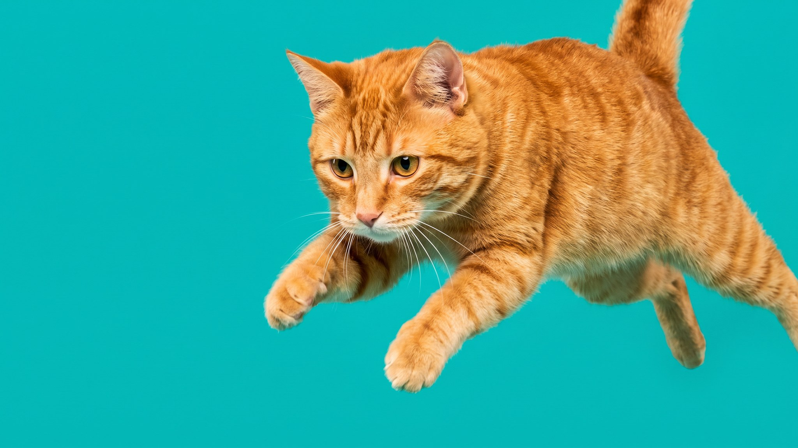

Откройте флакон валерьянки рядом с кошкой — и одна тут же начнёт кататься по полу и мяукать на всю квартиру, а другая понюхает и уйдёт. Реакция на валерьянку генетически обусловлена: примерно каждая третья кошка на неё не откликается. А спиртовая настойка из аптеки, которую иногда дают питомцам «порезвиться», создаёт поведенческие проблемы, о которых владелец узнаёт позже. Разбираем, что здесь происходит.
🐾 У вашей кошки так же?
Расскажите в AnimaLife, как ведёт себя ваш питомец, — приложение объяснит причину и даст пошаговый план. Бесплатно, без записи к специалисту.
Разобрать свой случай → Разобрать в MAX →
У вас iPhone? AnimaLife есть в App Store
Валериана содержит актинидин — летучее вещество из группы иридоидов. По структуре оно похоже на компоненты кошачьих феромонов. Когда кошка улавливает запах актинидина, это запускает поведенческую цепочку, очень похожую на брачную: трение мордой о поверхность, перекатывание, выделение слюны, вокализация. Мозг воспринимает сигнал как феромональный, даже если его источник — корень растения.
Реакция длится от двух до пятнадцати минут, затем чувствительность временно снижается. Примерно через полчаса кошка может снова откликнуться на запах.
Чувствительность к актинидину передаётся по наследству и контролируется одним геном. По разным оценкам, от 30 до 40% кошек его лишены. Это норма, а не отклонение. Котята до полугода тоже обычно не реагируют: реакция появляется после полового созревания.
Чем валерьяна отличается от кошачьей мяты? Кошачья мята содержит непеталактон, механизм похожий, но другое вещество. Часть кошек реагирует только на валерьянку, часть — только на мяту, часть — на обе. Встречается и полное равнодушие к обоим растениям — это тоже вариант нормы.
Аптечная настойка валерианы содержит этиловый спирт. Для кошки это создаёт два отдельных воздействия: реакция на актинидин плюс воздействие спирта на нервную систему. Кошка не получает «весёлую» прогулку по комнате — она получает перевозбуждение в сочетании с токсическим эффектом.
Если хочется дать кошке сенсорную стимуляцию, есть более предсказуемые варианты. Сухой корень или листья валерианы в игрушке — кошка нюхает и трётся, без спирта. Кошачья мята в тех же формах. Сильвервайн (актинидия японская) — по исследованиям работает на большем проценте кошек, чем мята или валерьяна.
Общее правило: любой такой аксессуар убирают после 10–15 минут игры. Постоянный доступ снижает чувствительность и приводит к тому, что кошке нужен всё более интенсивный стимул, чтобы отреагировать. Периодичность раз в несколько дней сохраняет эффект дольше.
🐾 Хотите понять, что кошка говорит вам?
Опишите ситуацию или пришлите видео в AnimaLife — AI разберёт поведение вашего питомца и подскажет, что делать. Бесплатно, ответ за минуту.
Разобрать поведение → Разобрать в MAX →
У вас iPhone? AnimaLife есть в App Store
🐾 Понравился разбор?
Подпишитесь на канал — каждый день разбираем по одному тревожному симптому у кошек и собак: что в пределах нормы, а когда пора к врачу. Подпишитесь, чтобы не пропустить разбор, который может спасти здоровье вашего питомца.
Материал носит информационный характер и не заменяет очную консультацию ветеринара.